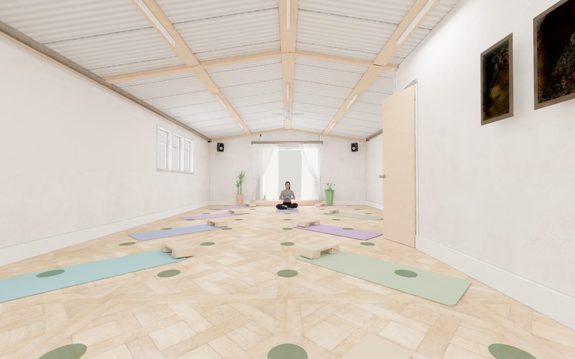

SimulatedStudio · 3 sources
Yoga Studio
Music from two speakers and a teacher's voice. Step through four acoustic treatments and hear the reverberation fall away.
- 4 treatments
- Left, right or both speakers
- Music and voice levels
T20 1.29 → 0.26 s38 points2nd order